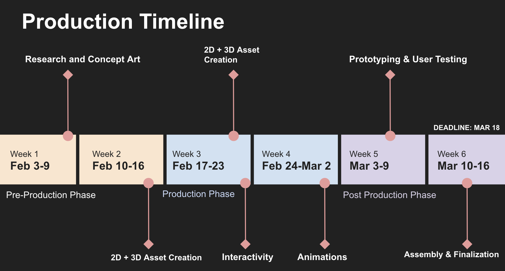

February 4, 2025
This week marked the beginning of our project, and we started by brainstorming ideas as a group to find a concept that resonated with all of us. We spent time bouncing ideas off one another, thinking about different themes, styles, and approaches. Our primary goal was to create something that felt both engaging and feasible for a scrollytelling project. After discussing various options, we landed on Beanie’s Backyard Adventure, a whimsical story set in a backyard where the main character, Beanie, embarks on a journey to solve a mystery involving missing items and clues hidden throughout nature. The idea of blending an adventure story with a scavenger hunt-style mystery felt exciting and allowed us to incorporate educational elements through the animals Beanie encounters. Once we settled on the core idea, we worked on crafting a clear and concise pitch to present to the class. This required us to refine the storyline, define our target audience, and outline how the scrollytelling format would effectively communicate the adventure. We discussed how we could use the visual format to make each animal encounter interactive and engaging, while still telling a cohesive story. The scrollytelling structure would allow users to navigate the narrative at their own pace, uncovering clues and solving the mystery, which seemed like a great fit for our concept. The next step was to prepare the pitch presentation for the class. We needed to ensure that we conveyed our idea clearly and compellingly, explaining why scrollytelling was the ideal medium for our project. We also had to define the roles within the group, so we could demonstrate our plan for organizing the work ahead. I helped with putting together the visuals and text for the presentation, ensuring that we communicated the key elements of the story and the overall vision for the project. We rehearsed our pitch to make sure everyone was on the same page and could confidently present the idea to the class. The pitch was well-received, and the feedback was encouraging. It gave us confidence in our direction moving forward. With the concept solidified and the pitch complete, we moved on to the next phase of development—starting to dive into the research and character development needed for our animals. This initial week of brainstorming and pitching was a crucial step in setting the foundation for the rest of the project. 
February 11, 2025
This week was all about preparing for the preproduction document due before reading week. As a team, we focused on refining our script and ensuring that all our preproduction elements were aligned for a smooth submission. I worked closely with Emily to fine-tune the script, revising parts of the dialogue to make it feel natural and engaging. We paid special attention to ensuring the animals’ personalities and behaviors came through in their speech. Each animal needed to speak in a way that felt authentic to its species while still being approachable for our target audience.
On the visual side, I prototyped a rough storyboard in Figma to map out how the scrollytelling flow would unfold, building off of what Emily sketched as a storyboard. This served as a starting point for Bonnie, who refined the visuals and emphasized how each animal would be introduced and how the user would interact with the story elements. It was crucial to ensure that the transitions between each part of the story felt seamless and immersive. I also created sketches of the raccoon and the toad, keeping in mind the key characteristics of each animal, such as the raccoon’s mischievous eyes and the toad’s bumpy texture. These initial drawings helped set the visual direction for the final illustrations.
Additionally, I contributed to assembling a moodboard, which became a reference for the entire team to maintain visual consistency throughout the project. The moodboard included forest environment imagery, textures reflecting the natural world, and color palettes that balanced the whimsical tone with realism. This tool helped guide our design decisions moving forward.
Throughout the week, I also focused on organizing the team’s efforts. As project manager, I made sure we were all on track for our submission, assigning tasks and ensuring everyone knew their responsibilities. I created a task list on Notion to keep track of our progress, which also helped us identify areas where we needed to catch up. We set a weekly team meeting every Thursday at 5 PM to check in, share progress, and address any issues before the weekend. This structure allowed us to stay organized and on target.
As the preproduction document deadline approached, I also took on the responsibility of creating the production timeline. I asked Bonnie to use her Figma template to help with this, and I collaborated with Emily to develop a content inventory, ensuring we had a clear list of all the assets we would need for production. Together, we reviewed the storyboard and script, making sure all the elements were coming together cohesively. I also helped with finalizing the content inventory and preparing any additional materials for the preproduction submission.
Overall, this week was packed with refining and organizing tasks to ensure that everything was in place for our preproduction document. From refining the script to creating visuals and organizing the team’s workflow, we made great strides in setting ourselves up for success as we moved into the next phase of production.

February 18, 2025 (Reading Week)
This week was reading week, so we didn’t have major tasks planned, but it gave me a chance to reflect on the project and prepare for the work ahead. I took the time to review the progress we had made so far, making sure all the key components were in place for when we resumed work after the break.
February 25, 2025
This week, I focused on developing the coding framework for our scrapbook scrollytelling experience. Our initial plan was to make the scrapbook highly interactive, incorporating buttons and UI elements similar to a video game. However, after discussing as a team, we decided to simplify the approach. Instead of a fully interactive scrapbook, we opted to have individual PNGs of each page appear at key moments in the story. This not only streamlines development but also maintains an engaging visual storytelling experience.
At the end of the story, when users need to review all the animals and clues to determine the culprit, we will implement an image gallery or lightbox popup to display all the scrapbook entries in one place. This decision makes the experience more cohesive while reducing unnecessary complexity.
Development Process
Before I began my coding experiments, Stef set up the GitHub repository to manage our project files efficiently. Once I started working on implementing the scrapbook effects, I created a secondary branch where I conducted development tests. I then uploaded my progress to GitHub and shared my findings with the team. During our in-class discussion, we collectively reviewed the code and brainstormed further improvements.
I experimented with JavaScript libraries for smooth scrollytelling transitions, particularly focusing on ScrollMagic. The main challenge was ensuring that each scrapbook entry appears at the right moment in the scrolling sequence. Additionally, we needed the entries to disappear when scrolling back up, creating a seamless and immersive experience. I will continue refining this functionality alongside Stef, Alex, and possibly Michael to ensure proper timing and smooth integration into the project.
Next Steps
Moving forward, Bonnie will be responsible for assembling the scrapbook pages. She will use Figma to combine the finalized script, group-illustrated animals, and the scrapbook page template designed by Stef. Once Bonnie completes the PNGs, she will send them to me for coding implementation. I will integrate them into the scrollytelling sequence and fine-tune their transitions to enhance the user experience.
Overall, this week’s progress laid a strong foundation for our project’s visual and technical components. By simplifying the scrapbook’s interaction and focusing on a clean, well-timed appearance in the scrollytelling flow, we are moving toward a more polished final product. I will continue refining the code and collaborating with the team to overcome any remaining development challenges.
March 4, 2025
This week I worked on refining the interactive scrapbook component for the scrollytelling experience. My main goal was to create a clear distinction between "in story" elements—like animals and shrubs, which exist in the environment—and "out of story" scrapbook pop-ups, which overlays the scene. Achieving this required multiple iterations, troubleshooting, and problem-solving, much of which I tackled with the help of ChatGPT.
Positioning elements dynamically within a scrolling interaction is... hard. I struggled with keeping the elements properly layered while having smooth transitions. The biggest challenge was timing the scrapbook pop-up so that it felt natural while keeping the animal and shrub animations properly synced. Often, elements would appear at unexpected times, breaking the immersion. I also experimented with layering different divs, but maintaining a consistent Z-index proved tricky when elements needed to enter and exit smoothly.
To solve this, I incorporated GSAP (GreenSock Animation Platform) and ScrollMagic to better control scroll-triggered animations. I learned how to use `triggerHook` values to control when elements appeared and disappear. I found that `power2.out` gave the most natural motion for objects moving into view, while `linear` worked better for steady movements. I also had to tweak animation durations, ensuring they didn’t reset abruptly when users scrolled back up.
One issue that caused unexpected behavior was a random shaking effect I initially applied to the shrub before it moved up to reveal the scrapbook. While the randomness added an organic feel, it also made the animation inconsistent—sometimes breaking the sequence entirely. I realized that introducing randomness to a scroll-dependent interaction can be unpredictable, so I tried a controlled upward motion instead.
Another key insight came from troubleshooting why certain elements weren’t appearing when expected. At first, I tried setting explicit `z-index` values, but I discovered that the problem wasn’t just layering—it was also about when animations were triggered relative to the scroll position. By using ScrollMagic’s scene debugging tools, I could visualize when elements were activating, which helped refine their placement and timing.
Through this process, I gained a somewhat better understanding of GSAP and ScrollMagic, particularly how they work together to make complex scroll interactions. I also learned the importance of debugging animations visually and avoiding unnecessary randomness in scroll-based animations. While this session felt like spinning my wheels, it helped me have a stronger grasp of how to structure interactive animations effectively. Now that Bonnie has kindly made the PNG assets of the scrapbook pages, I think i'll have an easier time animating the scrolling interactions for these.